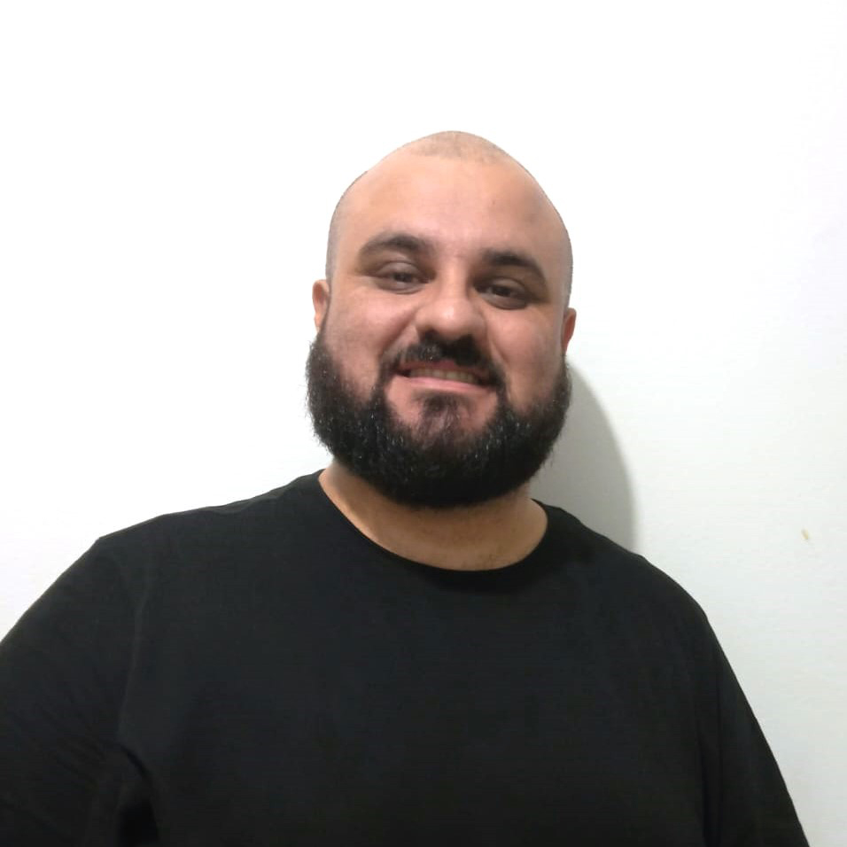
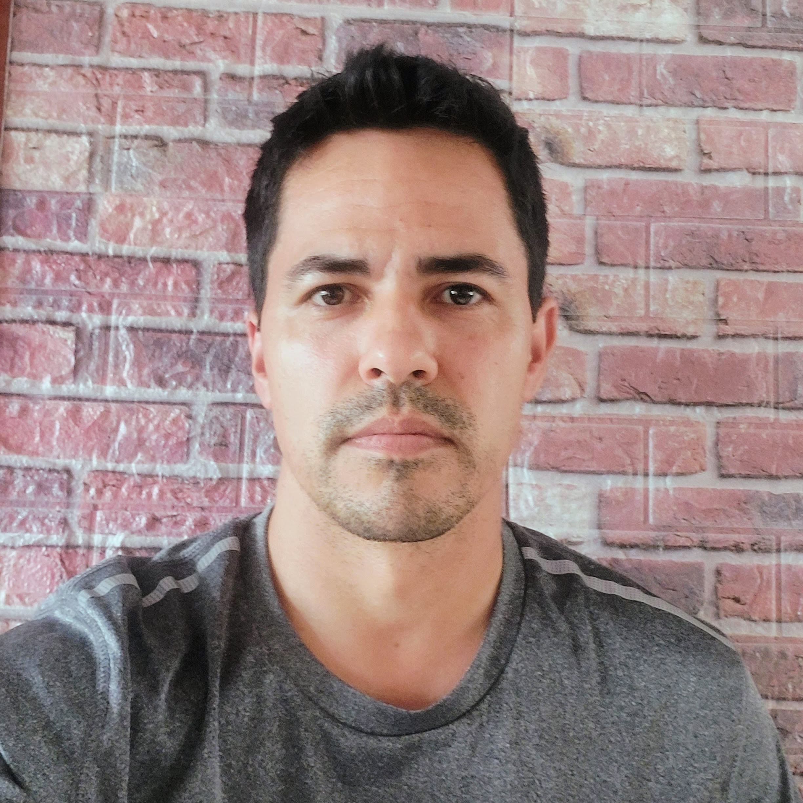
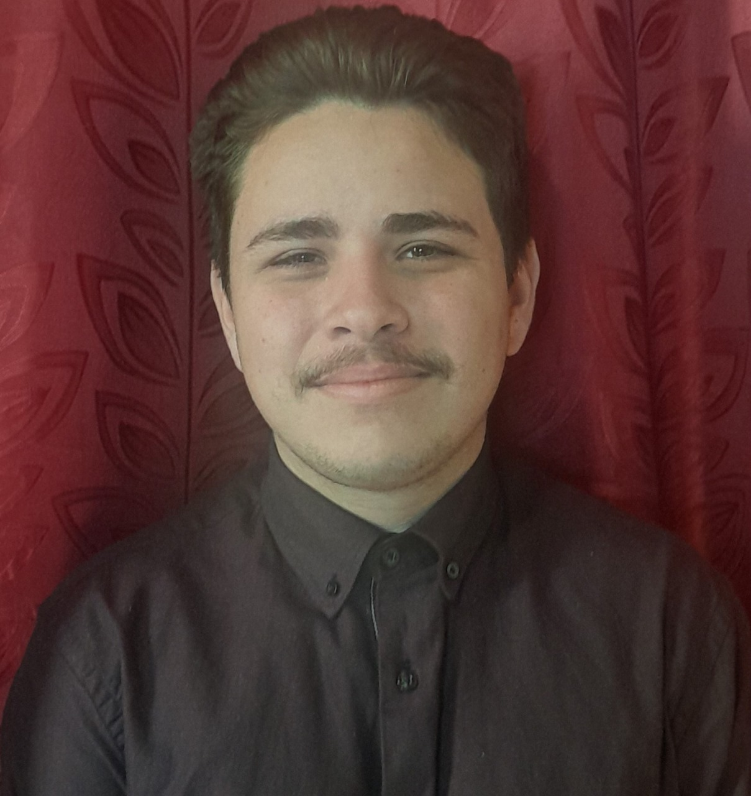

Quem somos
Os desenvolvedores do jogo e do site foram alunos do curso do CPDI "Além de jogar, Eu faço jogos", da turma 02 de 2023. Essa parte é reservada para conhecer melhor esses desenvolvedores e suas contribuições para o projeto.
Tallys Nascimento

Tallys trabalha como designer e estudante da UFSC do curso de Design com Habilitação de Protudo.
Desenvolveu a identidade visual, gerenciou o projeto e auxiliou os demais integrantes na parte da programação, tirando dúvidas e dando idéias. No site, também produziu o style.css, o header e o navegador.
Clayton Santini Ferreira

Clayton trabalha no departamento societário no ramo da contabilidade, sempre teve interesse em programação e agora já iniciou sua transição de carreira.
No jogo contribuiu com ideias quanto a nome e mecânicas, e desenvolveu a fase da colheita.
Evandro Cardoso

Evandro possui licenciatura em História, trabalha como técnico em Telecomunicação e pretende efetuar transição de carreira para área da programação.
No jogo, Evandro ficou encarregado da tela inicial e da tela de seleção de níveis. No site, estruturou os conteúdos e organizou a página "O projeto".
Lucas da Silva Ferreira

Lucas é formado na escola EEB Jacó Anderle, e pretende seguir carreira na área de programação.
Na parte do jogo, desenvolveu a fase da cozinha. Organizou, atribuiu funções e interações aos elementos. Na parte do site, estruturou o conteúdo e organizou as tags das páginas Chefe Rural, Download do Jogo e Quem somos.